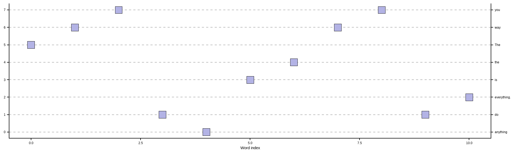

R translation of Mike X Cohen’s original Python notebook
Published
September 3, 2026
Using the code without reading the book may lead to confusion or errors.
Part 1: Character-Based Tokenization
# Start with a text stringtxt <-"The way you do anything is the way you do everything."# Split into individual characterscharacters <-strsplit(txt, "")[[1]]cat("The full text:\n", txt, "\n\n")
The full text:
The way you do anything is the way you do everything.
# Build the word vocabularyword_vocab <-sort(unique(words))cat(sprintf("\nThere are %d words, %d of which are unique.\n",length(words), length(word_vocab)))
# Encode: map each word to its vocab index (0-indexed)tokens_word <-match(words, word_vocab) -1Lprint(tokens_word)
[1] 5 6 7 1 0 3 4 6 7 1 2
df_word <-data.frame(position =seq_along(tokens_word) -1L,token = tokens_word)ggplot(df_word, aes(x = position, y = token)) +geom_point(shape =22, size =5, fill ="#b3b3e5", color ="black") +scale_y_continuous(breaks =seq_along(word_vocab) -1L,sec.axis =sec_axis(~ ., breaks =seq_along(word_vocab) -1L,labels = word_vocab) ) +labs(x ="Word index", y =NULL) +theme_classic() +theme(panel.grid.major.y =element_line(linetype ="dashed", color ="grey70"))

Figure 2: Word-level token indices for the example sentence.
Part 3: OpenAI’s GPT-2 Tokenizer
This section uses the tok package, which provides R bindings to HuggingFace’s tokenizers library.
library(tok)# from_pretrained() is a static method on the tokenizer R6 classtokenizer <- tokenizer$from_pretrained("gpt2")tokenizer$get_vocab_size()
[1] 50257
gpt2_tokens <- tokenizer$encode(txt)$ids# Print each token alongside its decoded stringfor (token in gpt2_tokens) { decoded <- tokenizer$decode(token)cat(sprintf('Token %4d is "%s"\n', token, decoded))}
Token 464 is "The"
Token 835 is " way"
Token 345 is " you"
Token 466 is " do"
Token 1997 is " anything"
Token 318 is " is"
Token 262 is " the"
Token 835 is " way"
Token 345 is " you"
Token 466 is " do"
Token 2279 is " everything"
Token 13 is "."
# Demonstrate how leading spaces affect tokenizationword1 <-" Mike"word2 <-"Mike"for (w inc(word1, word2)) { ids <- tokenizer$encode(w)$idscat(sprintf('Token for "%s" is %s\n', w, paste(ids, collapse =", ")))}
Token for " Mike" is 4995
Token for "Mike" is 16073
cat(sprintf("There are %d tokens, %d of which are unique.\n",length(gpt2_tokens), length(unique(gpt2_tokens))))